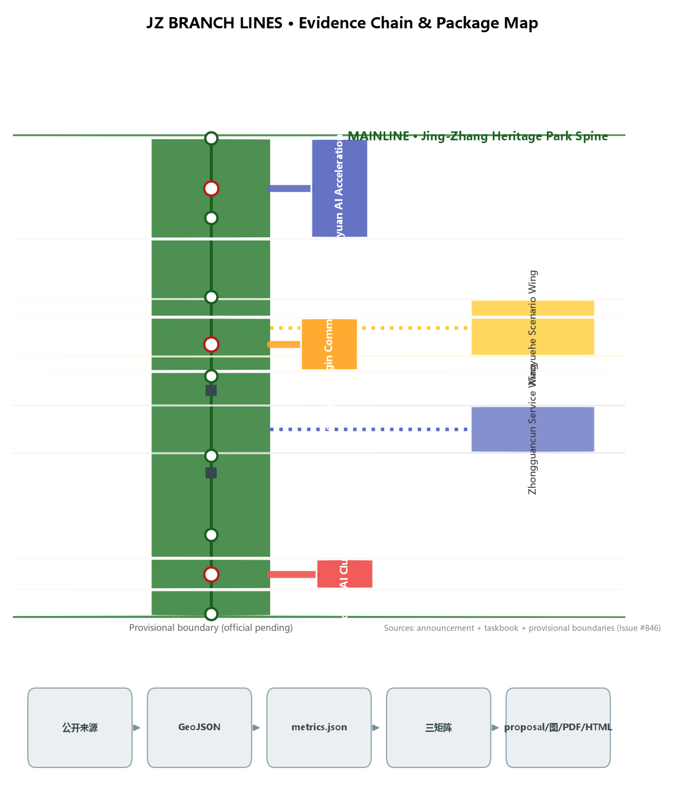
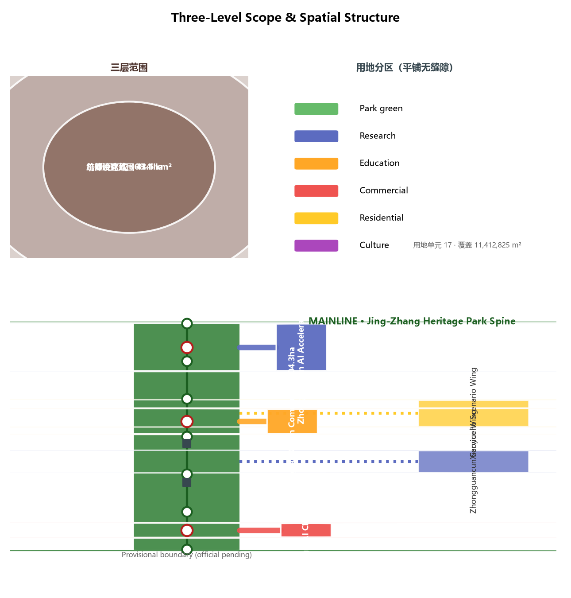
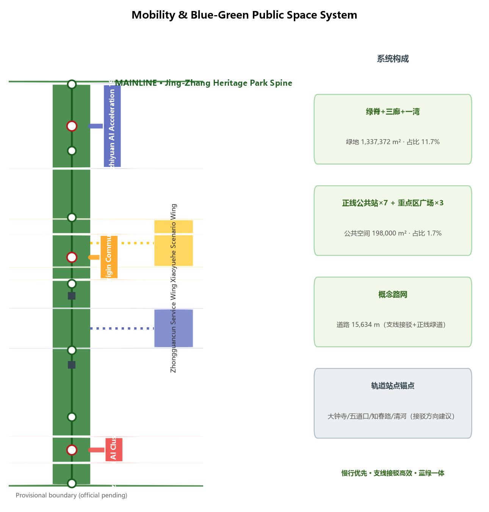

Core Metrics
Overview Map

One mainline, five branches: the mainline is the Jing-Zhang Heritage Park green spine; the five branches are the three key areas (Zhongzhiyuan, AI Origin Community, Dazhongsi) and two wings (Zhongguancun Service Wing, Xiaoyuehe Scenario Wing). A branch is both a railway branch line and an open-source branch — innovation grows along branches like PRs, is validated on the mainline, and merges back.
Three-Level Scope

Coordinated research 43.6 km² (strategy) → Overall design 11.4 km² (one-mainline-five-branches) → Key areas 368.4 ha (detailed design).
Key Areas

Zhongzhiyuan AI Acceleration 192.9 ha (full-stack + governance voice); Beijing AI Origin Community 104.3 ha (world-class ecosystem); Dazhongsi AI Cluster 72.0 ha (AI-native formats).
Land Use
17 parcels tile the submitted boundary with no gaps or overlaps; research, education, commercial, residential, and green land arranged along branches.
Mobility

Mainline greenway slow-traffic spine in a 15.6 km conceptual network; branch connector roads + cross streets; rail anchors: Dazhongsi/Wudaokou/Zhichunlu/Qinghe.
Blue-Green Public Space
One spine, three corridors, one bay: green spine + three branch greenways + Xiaoyuehe riverfront, 133.7 ha green; 10 public-space nodes (7 mainline stations + 3 plazas).
Buildings
73 conceptual buildings, 445k m² footprint — massing direction only, not statutory floor area.
Renewal Projects
Near term: mainline + Origin Community → Mid term: Zhongzhiyuan + Dazhongsi → Long term: two wings; five phases (phasing.geojson).
AI Scenarios
12 scenario cards (S01-S12) incl. 3 industry test/validation scenarios (T01-T03); 5 user personas; scenario-space-operation mapping.
Task Coverage
All 20 announcement tasks (1.3/1.4/1.5) + agent.1-agent.6 fully covered (compliance_matrix.json).
Self-Check Status
Local self-check writes self_check.json; spatial review: PASS (provisional notes only); visual/professional checks refreshed at finalize.
Sources
Official announcement (2026-05-09), agent taskbook (2026-05-18), Three-Areas-Two-Wings (2026-04-03), Haidian 1+X+1 (2026-03-02), Urban Design Measures, Regulatory Plan Measures, Land-Use Classification Guide, provisional boundaries (Issue #846).
Assumptions
A-CONTROLS-001: regulatory controls, redlines, ownership, municipal, and engineering constraints pending official materials; full recalculation when official boundaries publish.